乳児の墓
怪しく楽しかったトラジャの旅もそろそろ帰国の時が迫ってきた。
トラジャを離れる前日、南部のカンビラという村にある乳児の墓を見に行くことにした。
あまり交通の便が良くないので近在の村まで乗り合いタクシーで行き、そこからは徒歩で移動した。
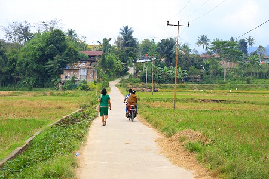
のんびりとした田舎道をてくてくと歩いていく。
実はこのカンビラの墓を見る前にも幼児の墓には何度か遭遇していた。
そのひとつはボリで。
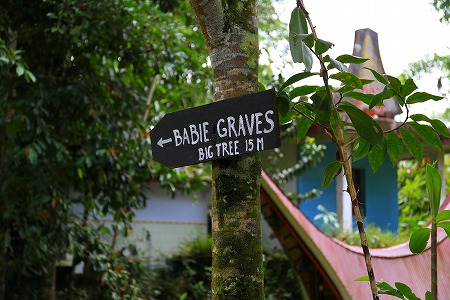
墓地の片隅に大きな木があり、そこに乳児を埋葬するのだという。
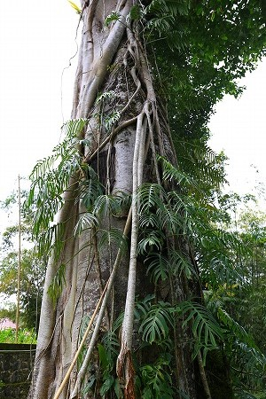
歯の生えていない乳飲み子は一般の墓には安置せずにこうして木の中に埋めてしまうのだ。
世にも珍しい木葬である。
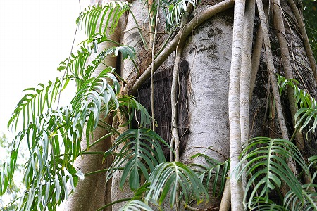
樹の幹に四角い穴を開け、そこに乳児の遺体を納める。
乳児はゆっくり、ゆっくりと樹に飲み込まれていくのだ。
何故、乳児だけが樹に埋葬されるのかはわからないが、成人の死者と区別されるにはそれなりの理由があるのだろう。
例えば沖縄の墓前には幼児が入る専用の小さな墓があるように子供が大人とは別に埋葬されるケースは世界的にも決して珍しくはない。
しかし樹に納められる、という埋葬方法は聞いたことがない。
パナの墓にも乳児の墓があった。
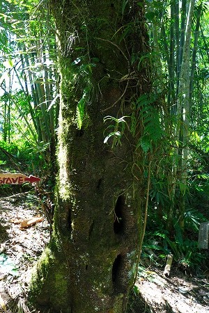
こちらは木の洞のようなところに埋葬するようで、特に穴をふさぐような事はなかった。
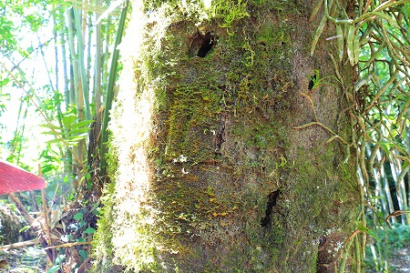
穴は小さく、乳児とはいえ埋葬するのにはあまりにも小さな穴だった。
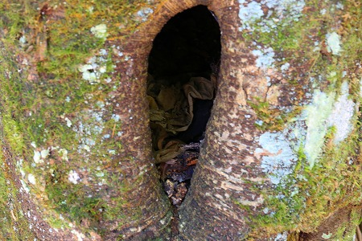
もしかしたら埋葬した後に樹が成長し、穴自体が小さくなってしまったのかもしれない。
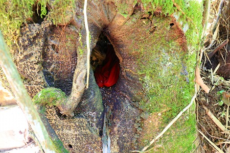
中はよく見えないのでコンパクトカメラだけを突っ込んで撮影したもの。
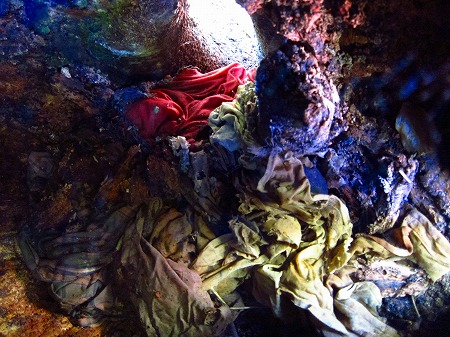
乳児の遺体はなかったが無数の布が折り重なっていた。
何とも悲しげな光景である。
タンパガロ郊外のサラプンにあるリアンビラ(乳児の墓）。
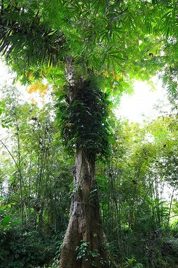
ここの乳児墓は特に大きな樹で、鬱蒼とした林の中で異彩を放っていた。
乳児の墓へ至るまではこのような木の根を跨いでいかなければならない。
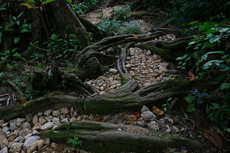
大きな木の幹には無数の穴が開いている。
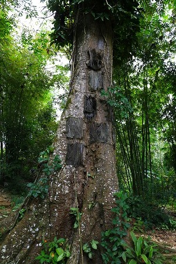
穴は四角く穿たれている。
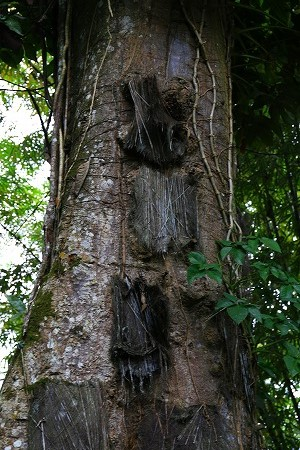
そしてシュロの皮のようなもので覆われている。
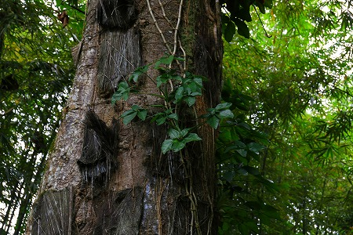
ここは成人の墓はなく、林の中にこの巨木だけがぽつんと立っていた。
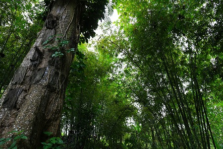
親や先祖と同じ墓に入れずに乳児だけで入る墓。
少しかわいそうな気もするが、木の成長に合わせて少しでも天に近づいて欲しい、という親心の表れなのだろう。
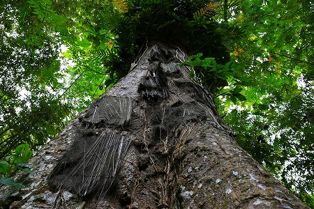
もし自分がこの伝統的な社会に生まれ育ったら、自分の子供を何の迷いもなくこの木に埋葬するだろうか。
いくら考えても仮定の仮定な話だけに結論など出るはずもない。
で、カンビラに到着。
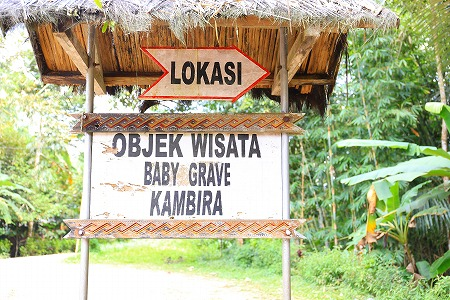
ここにも乳児の墓がある。
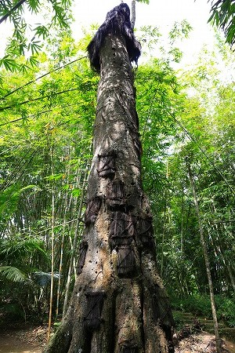
ここの木はさらに大きく、幹も太い。
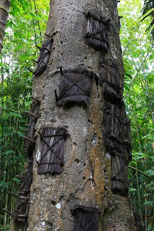
まさに木葬に持ってこい、の木なのである。
この木は白い樹液がでるという。
それを母乳に見立てて、この墓に入れば木がミルクを与え続ける、と信じられている。
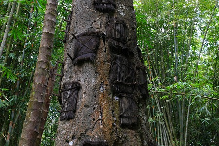
つまり、亡き子はこの木が面倒みるから、安心しなさい、的な意味なのだろう。
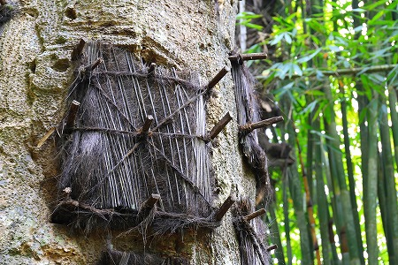
穴をふさぐシュロの皮の蓋は四隅と中央を木の釘でとめられていて呪術的な雰囲気もなきにしもあらず。
こんなに穴を空けられて大丈夫なのだろうか？木。
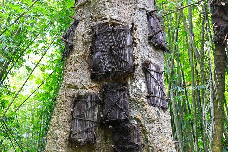
トラジャでの滞在中、幾多の墓を見てきた。
その中でもこの乳児の墓は抜群に心に迫るものがあった。
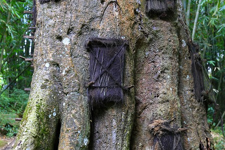
それは極めてエモーショナルな葬送習俗だから。
トラジャの人々にとって墓や葬式は社会システム上特別なもので、立派な葬式を上げて立派な墓を作らないと死者が天に行けないという義務感に満ちている。
だから一般の墓は困難な場所にわざわざ穴を穿ち、タウタウ人形を奉納する。
ところが乳児の墓は「木に埋める」という特異点を除けば、成人の墓のような「気張った」感覚があまり感じられないのだ。
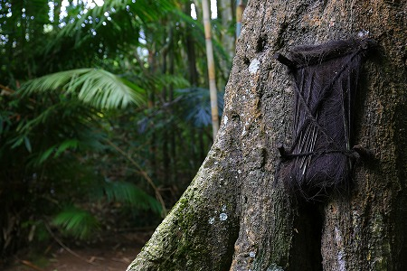
死を感情的なものでなく、儀式の過程の中で認識していくトラジャの墓や葬式を見てきた私はいつしか「死んだことへの悲しみや痛み」はどこに行ってしまうのか？といった疑問をずーっと持ち続けていた。
葬式も墓もとにかく死者を天に送るためのシステムであって、実際に家族が死んだ悲しみはどう解消していくのかが良く見えなかったのだ。
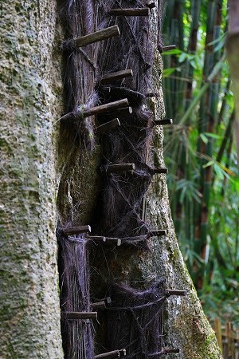
でも乳児の墓は直観的だ。
そこには子を亡くした親の悲しみがミニマルな埋葬方法の中にも滲み出ているのだ。
トラジャでは死者も葬式をあげるまでは「生きている人」として扱う。
だから葬式までは居間に死体を置いておくし、毎日食事も供える。
でもそれはあくまでも彼らの社会通念上の「お約束事」であって、彼らだっていくら食事を備えたところで死んじゃってることは理解できているのだ。
その建前と感情のギャップが今一つ理解できなかった。
でも、この乳児の墓を見たら、彼らの死生観の本質が何となく理解できた。
人の死を木に転化させることで、再生させようとしているのだろう。
輪廻転生とはまた違った意味で他者の命を以って生命を繋いでいこうという希求の表れがここには見られる。
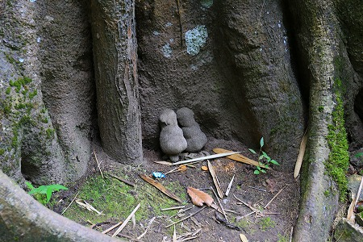
木の根元には小さな人形が供えられていた。
何を意味するかは見た人によって様々な解釈があろうが、これを奉納した人の想いはたったひとつなはずである。
街までの帰り道、学校帰りの子供たちと一緒に水田のあぜ道をトボトボと歩いた。
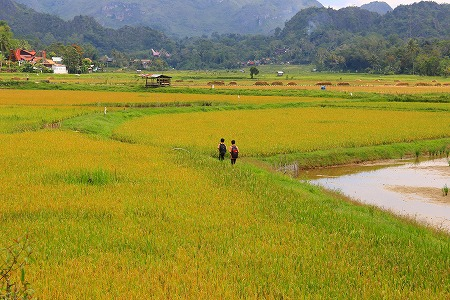
彼らにしてみれば滅多に見ない日本人は宇宙人のようなものだろうが、私にしてみれば自分の子供のように愛おしい存在だった。
君たち、生きてて良かったな。
次ラストです！
トラジャの葬式と墓
珍寺大道場 HOME